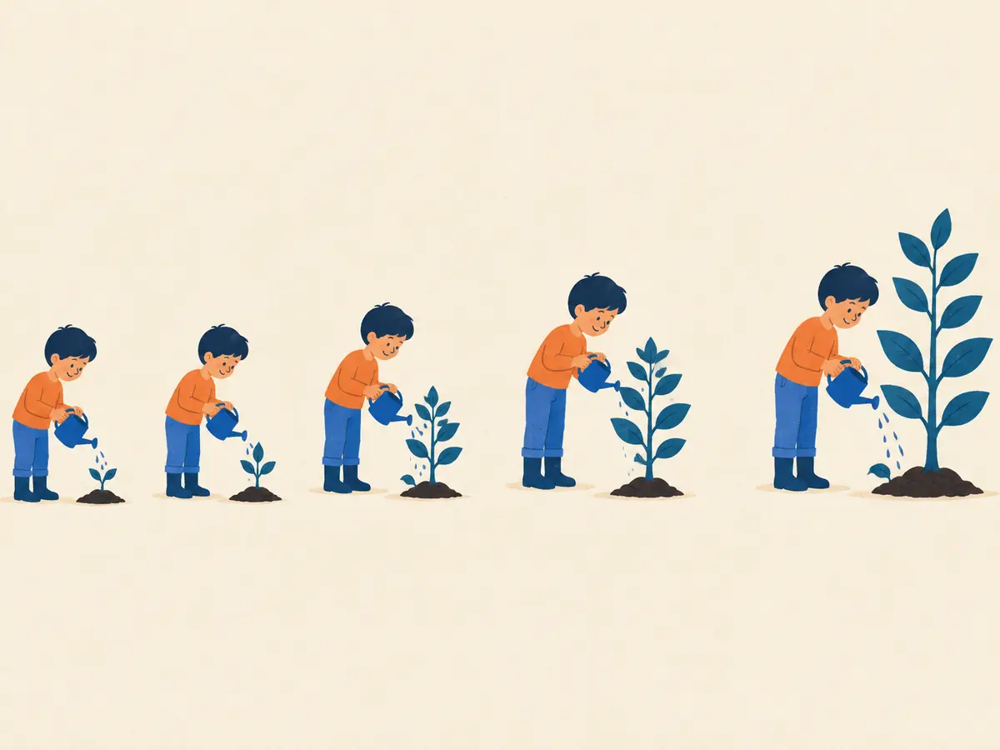

How memory works
You will forget most of what you read today, and that's normal. This lesson shows you why, and the handful of techniques that reliably beat forgetting. Every lesson in this course is built around them.
By the end you can
- Describe the forgetting curve and what flattens it.
- Explain why recalling beats re-reading.
- Name the five techniques this course uses, and where you'll meet each one.
Answer before reading on. Getting it wrong is part of the method (you'll see why).
Which study method gives the best recall one week later?
- Re-reading the text four times
- Reading it once, then testing yourself three times
- Reading once and highlighting the key sentences
- Reading once, very slowly
You have 3 hours to prepare for an exam in two weeks. Which schedule wins?
- 3 hours the night before the exam
- 3 hours today, while it's fresh
- 1 hour today, 1 hour in 3 days, 1 hour in a week
- It doesn't matter; total time is what counts
Your brain is designed to forget
New information first lands in working memory, a tiny scratchpad that holds a few items for seconds. To last, it must be encoded into long-term memory and later retrieved. Most of what we read never makes that trip. That's a feature, not a bug: your brain filters out what it never needs again.
So the brain is constantly asking: "Did I need this again?" Each time you pull a memory back out, you answer yes, and the brain makes it sturdier and slower to fade.
The curves are an illustrative model, $R(t) = 0.2 + 0.8\,e^{-t/S}$, where each review raises the stability $S$. Real numbers vary by person and material; the shape is what holds up across studies.
Explain like I'm 5
Your memory is like a bucket with tiny holes. When you learn something, the bucket is full. Then it slowly drips out.
Every time you remember it on your own, you refill the bucket and plug a few holes. So it drips slower next time, and you can wait longer before the next refill.
Recalling is the workout, re-reading is watching the workout
Re-reading feels productive because the text looks familiar. But familiarity is not memory. The act that strengthens a memory is pulling it out without looking: answering a question, explaining it aloud, sketching the diagram from scratch. Psychologists call this the testing effect or retrieval practice.
It feels harder, and that's the point. Robert Bjork calls these desirable difficulties: effort during practice that pays off later, even though it makes practice feel worse.
The five techniques this course is built on
- Retrieval practice: quizzes and "explain it back" boxes in every lesson. (Roediger & Karpicke, 2006)
- Spacing: your Review deck brings cards back after ~1, 3, 7, 16 and 35 days. (Cepeda et al., 2006)
- Interleaving: review sessions shuffle topics, so you practise choosing the right idea, not just repeating one. (Rohrer & Taylor, 2007)
- Dual coding: every hard idea gets an animation and words, with labels on the picture, not far away. (Paivio; Mayer's multimedia principles)
- Elaboration: "why does this work?" prompts and ELI5 analogies connect new ideas to things you already know. (Dunlosky et al., 2013)
Two more small habits you'll see: a warm-up guess before each lesson (pre-testing primes your attention; Richland et al., 2009) and a confidence rating on quiz answers, so you learn where your sense of "I know this" can be trusted.
Explain like I'm 5: spacing

Watering a plant with a whole bucket once drowns it. A little water today, a little in a few days, then a little next week, and it grows strong roots.
Learning is the same: small sips, further and further apart.
Why does a quiz help you remember more than re-reading, even if you get the quiz wrong?
On the forgetting curve, what changes after each successful review?
- Nothing. Memory always fades at the same speed.
- Memory stops fading entirely.
- Memory jumps back up and fades more slowly afterwards.
- Memory fades faster, because you're overloading it.
Which of these is a "desirable difficulty"?
- Sketching a diagram from memory before checking the original
- Reading in a noisy café
- Studying while tired
- Using a smaller font
Why does the Review deck mix cards from different lessons?
- It's simpler to build that way
- To make sessions shorter
- Because older cards are more important
- Interleaving forces you to pick the right idea, which improves transfer
Key takeaways
- Forgetting is fast and normal. Each successful recall resets it and slows it down.
- Recall > re-read. Effortful retrieval is what builds memory.
- Space it out. Same time, spread across days, beats cramming.
- Mixing topics (interleaving) and pairing words with pictures (dual coding) both help.
Adding cards schedules your first spaced review. It takes about a minute a day.